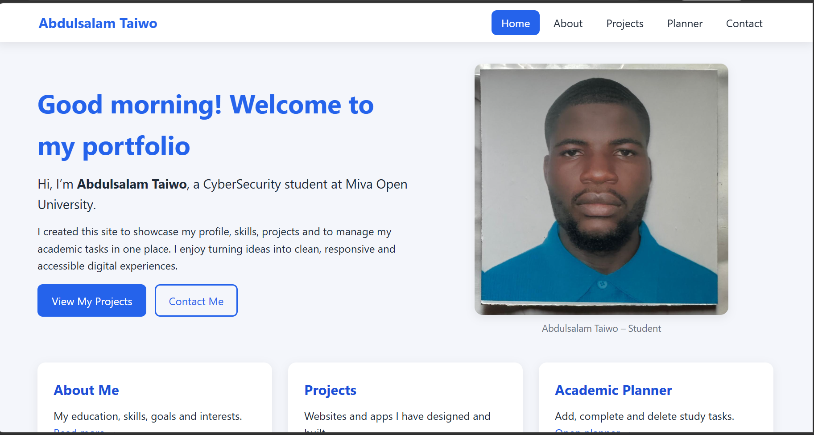
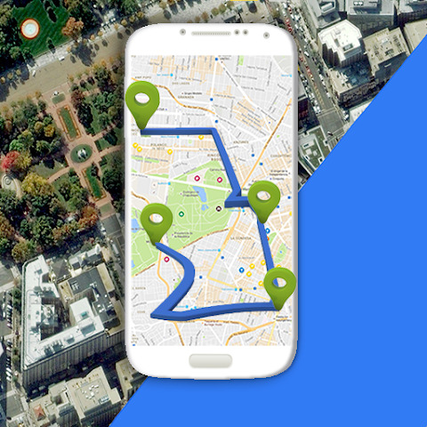
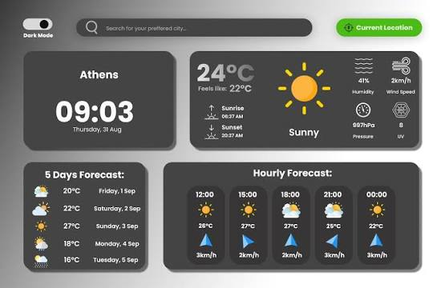

Student Portfolio Website
A responsive multi-page portfolio built with semantic HTML, CSS Grid and vanilla JavaScript.

A responsive multi-page portfolio built with semantic HTML, CSS Grid and vanilla JavaScript.

A to-do application with local storage, filtering and a clean mobile-first interface.

Displays current weather and forecasts for any city using a public weather API.